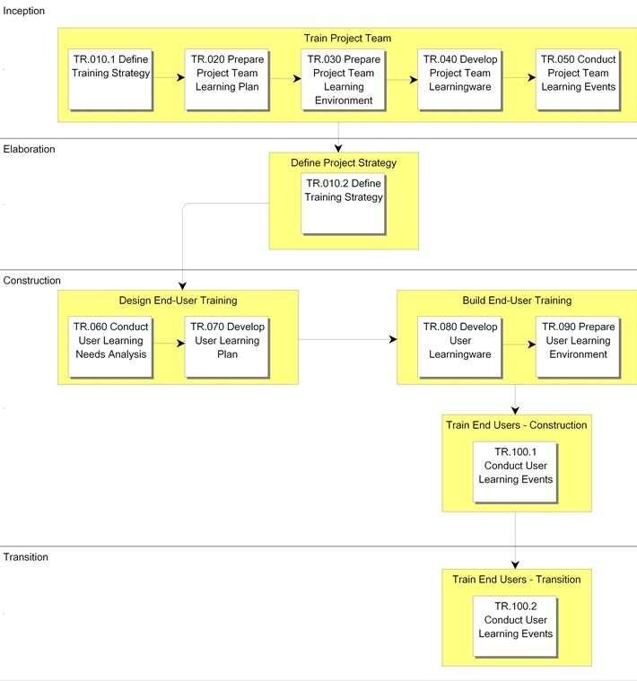

OUM |
Process Overview |
||
Method Navigation |
Current Page Navigation |
||
|
|
||||||||
The objective of the Training process is to make sure that the project team is adequately trained to begin the tasks necessary to start the project and the users are adequately trained to take on the tasks of running the new application system.
In a commercial off-the-shelf (COTS) application implementation, the project team may also need to be trained on the applications being installed in order to bring the project team up to a level of application proficiency in order to complete the process of developing and testing the Business Procedure Documentation.
 This process overview is written from the perspective of a Full Method View, utilizing ALL of the activities and tasks in this process. Therefore, all of the following sections provide comprehensive information. If your project is utilizing a tailored approach (for example, Technology Full Lifecycle View, Application Implementation View, Middleware Architecture View), not everything in this overview may be appropriate for your project. Please keep this in mind, especially when reviewing the Key Work Products and Tasks and Work Products sections. You should use OUM as a guideline for performing all types of information technology projects, but keep in mind that every project is different and that you need to adjust project activities according to each situation. Do not hesitate to add, remove, or rearrange tasks, but be sure to reflect these changes in your estimates and risk management planning. You should also consider the depth to which you address and complete each task based on the characteristics of your particular project or project increment. See Oracle's Full Lifecycle Method for Deploying Oracle-Based Business Solutions for further information on the scalability and adaptability of OUM.
This process overview is written from the perspective of a Full Method View, utilizing ALL of the activities and tasks in this process. Therefore, all of the following sections provide comprehensive information. If your project is utilizing a tailored approach (for example, Technology Full Lifecycle View, Application Implementation View, Middleware Architecture View), not everything in this overview may be appropriate for your project. Please keep this in mind, especially when reviewing the Key Work Products and Tasks and Work Products sections. You should use OUM as a guideline for performing all types of information technology projects, but keep in mind that every project is different and that you need to adjust project activities according to each situation. Do not hesitate to add, remove, or rearrange tasks, but be sure to reflect these changes in your estimates and risk management planning. You should also consider the depth to which you address and complete each task based on the characteristics of your particular project or project increment. See Oracle's Full Lifecycle Method for Deploying Oracle-Based Business Solutions for further information on the scalability and adaptability of OUM.
This process flow for this process follows:

The Training process ensures that the project team is adequately trained to begin the tasks necessary to start the project and the users are adequately trained to take on the tasks of running the new application system. The Training team may also train the company’s applications maintenance personnel, help desk personnel, and the acceptance test team.
The Training process encompasses the following areas:
Training courses are role- and process-based. When the custom applications require custom developed training material, existing project artifacts should be utilized as source documents. Training materials should follow the use cases and business process models that are carried forward into the Documentation and Training processes and used to develop the documentation and training materials, as appropriate. The User Guide and User Reference can be used for training users; the systems operations documentation for training administrators; and the Technical Reference for training systems administrators, analysts, designers, and IS operations staff. Help desk training may require some additional documentation, such as frequently asked questions and answers. Trainers and courseware developers should orient their material toward roles and jobs, and not components. To retain the students’ attention and avoid overwhelming them with information, break training sessions into manageable pieces that focus on clear objectives. Include labs that provide hands-on interaction with the system and encourage confidence in the students’ ability to use the system.
Achieve substantial savings in time and resources by designing the Documentation approach in such a way that, if need be, you can revise the documentation in later project phases. For example, you can use refined business process flow diagrams in the user manuals and in user training.
For most commercial off-the-shelf (COTS) software, the provider offers standard classes covering the basic product features and functions. Create custom classes or other types of training, as necessary, to suit the needs of each project.
OUM distinguishes between education and training. Education provides an understanding of the fundamentals of how the business operates in a certain type of environment. Training is about learning the standard or developed applications and skills courses.
Use education when preparing project team members, users, or analysts to tackle implementation challenges and accept ownership of new business processes. It provides guidance on industry reference and leading practices information while clarifying the operational and financial flow of the company. More importantly, it explains why and how the company expects to achieve success, and if relevant to the project team how successful companies in similar industries have achieved success and thereby encourages the use of proven practices, concepts, and business process metrics.
Training provides the basis for setting up and using the application(s). For large organizations, OUM encourages the use of the train-the-trainer approach; the project staff or software provider staff trains the company instructors who in turn teach the users. OUM concentrates on providing information on the setup, technical, and functional aspects of the application(s) and tools to the project team.
Two training techniques are available: direct training and train-the-trainers.
In direct training, members of the project team should staff the trainer positions. However, if there are large numbers of users to train, the trainer should be someone experienced in providing training.
In-house trainers teaching the courses is called the train-the-trainer approach. In this case an instructor, who should be a member of the team, trains the trainer. The trainer then trains the users and has assistance from an outside resource with strong knowledge.
The field of andragogy (adult learning) makes a clear distinction between training and learning. Whereas training is often a one-time occurrence, driven by the trainer rather than the learner, it stops short of providing the actual performance results expected from a skilled performer. Learning expands the concept of training so it applies to an entire process where a learner participates in learning events organized in a structured path that favors gradual learning from simple to more complex. Learning here is better mapped to the ways adults learn and is generally self-driven by the learner. It includes repetition activities, reinforcement and measurement to ensure that the learning has actually occurred and is now translated into the expected behavioral performance. It is also delivered in a variety of formats to cater to the variety of adult learning styles.
If you have many students to train, hold multiple classes and limit each class size to 20 or fewer. Make sure the equipment available in the training environment is similar to the equipment students will use at their normal work sites. Only being trained in those functions relevant to their job would allow students to retain more, but logistical constraints do not always permit this degree of specialization. You must balance factors such as distance to the training site, number of classes, covered material, and class duration.
Make sure you have the highest level of training retention. Aim to train the users as close as possible to the date of their start with the production system, so they can exercise their new knowledge immediately.
Efficient training administration demonstrates a high level of commitment to the success of the new system.
Just as it is important to use final documentation as a tool in training, it is very important to construct training environments that reflect real production data and system configuration.
Since the creation of training environments is often on the critical path, it is very important to plan ahead and train users with scenarios that were successful during business system testing. In this way, training stays focused on real business flows and information.
Deploying applications to multiple sites at different points in time can have major impacts on training as follows:
Oracle Tutor provides users with relevant process documentation and learning materials. These materials are process- or role-based, easy to update, cost-effective and developed in conjunction with the implementation. Oracle Tutor helps apply functionality specific to Oracle Applications within the context of the organization’s unique set of policies and procedures. The product is comprised of three components: an authoring tool, a publishing tool, and a repository of Oracle Application courseware and procedure document objects.
The tasks and work product s for this process are as follows:
| ID | Task | Work Product |
|---|---|---|
Inception Phase |
||
TR.010.1 |
Define Training Strategy | Education and Training Strategy |
TR.020 |
Prepare Project Team Learning Plan | Project Team Learning Plan |
TR.030 |
Prepare Project Team Learning Environment | Project Team Learning Environment |
TR.040 |
Develop Project Team Learningware | Define Training Strategy |
TR.050 |
Conduct Project Team Learning Events | Skilled Project Team |
Elaboration Phase |
||
TR.010.2 |
Define Training Strategy | Education and Training Strategy |
Construction Phase |
||
TR.060 |
Conduct User Learning Needs Analysis | User Learning Needs Analysis | TR.070 |
Develop User Learning Plan | User Learning Plan | TR.080 |
Develop User Learningware | User Learningware | TR.090 |
Prepare User Learning Environment | Configured User Learning Environment | TR.100.1 |
Conduct User Learning Events | Skilled Users |
Transition Phase |
TR.100.2 |
Conduct User Learning Events | Skilled Users |
The objectives of the Training process are:
Refer to Key Work Products for a complete list of key work products in OUM.
The following roles are required to perform the tasks within this process:
| Role ID | Name | Responsibility |
|---|---|---|
Implementing Organization |
||
| APS | Application/Product Specialist | Provide knowledge and guidance regarding the functionality and capabilities of the product(s) being implemented. |
| BA | Business Analyst | Obtain sample business cases, and load demo data. Conduct interviews and prepare list of proposed courses and the roles of attendees. Research availability of standard courses. Schedule courses. |
| CMS | Change Management Specialist | Assist in conducting the learning needs analysis. |
| DBA | Database Administrator | Provide database administration for setting up the training environments. Install and configure the training database. Ensure all users have access to the database. Provide support during training. |
| SAD | System Administrator | Assist in administering the project team and user learning environments, including ensuring hardware is correctly configured: installing, configuring, maintaining operating and development software, and controlling access to the environments. Install and configure hardware and operating system. Install and configure application code. Ensure that login IDs and responsibilities exist for the students. Provide support during training. Install training environment. Convert data and package and test training database. Provide support during training. |
| TW | Technical Writer | Help develop and edit training materials. |
| TRS | Training Specialist | Define learning requirements, prepare learning plan, produce learning material, and deliver courses. Review sample business cases and demo data. Perform class dry-runs. Train the users, administrators, and other trainers. Provide and evaluate course evaluations. |
Customer (User) |
||
| BLM | Business Line Manager | Provide information about organizational performance measures, and ways in which the units operate and respond to events in order to achieve those objectives. Describe requirements for organizational acceptance. Participate in events. |
| CPM | Customer Project Manager | Ensure availability and commitment of company personnel. Ensure availability of hardware, software, and facilities. |
| CPS | Customer Project Sponsor | |
| CSM | Customer Staff Member | |
| SS | IS Support Staff | Assist in installing and configuring environments needed during the project and maintaining database access controls. Provide information on current expertise level and roles performed. Provide availability information. |
| USR | User | Provide information on computer literacy level and roles performed. Provide availability information. Participate in Training events. |
The critical success factors of this process are:

Copyright © 2006, 2016, Oracle and/or its affiliates. All rights reserved.